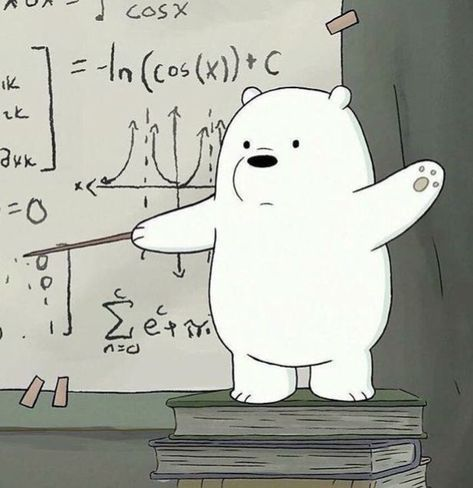

2. Sistem Persamaan Linear🦓#

Apa itu Sistem Persamaan Linear?#
Sistem persamaan linear adalah kumpulan dari dua atau lebih persamaan linear dengan variabel yang sama.
Tujuan utama: Menemukan nilai variabel yang memenuhi semua persamaan secara bersamaan.
Contoh Umum :
$\( \begin{aligned} x + y &= 5 \\ 2x - y &= 1 \end{aligned} \)$
Dalam persamaan linear disebut linear karena kedua variabelnya membentuk garis lurus, serta tidak ada pangkat lebih dari 1, akar, atau perkalian antar variabel.
1.1 Sistem Persamaan Linear#
1.1.1. Definisi Sistem Persamaan Linear#
Suatu sistem persamaan linear (system of linear equations atau linear system) adalah suatu himpunan persamaan-persamaan linear.
Sistem linear homogen adalah himpunan persamaan linear yang semuanya berbentuk homogen (ruas kanannya nol).
Jika kita menuliskan suatu sistem yang terdiri atas \(m\) persamaan dalam \(n\) peubah \(x_1, x_2, \ldots, x_n\), biasanya setiap persamaan ditulis dalam bentuk standar dan suku-suku yang bersesuaian disejajarkan dalam kolom sebagai berikut:
[ \begin{aligned} a_{11}x_1 + a_{12}x_2 + \cdots + a_{1n}x_n &= b_1 \ a_{21}x_1 + a_{22}x_2 + \cdots + a_{2n}x_n &= b_2 \ \vdots \qquad\qquad\qquad\qquad & \vdots \ a_{m1}x_1 + a_{m2}x_2 + \cdots + a_{mn}x_n &= b_m \end{aligned}
Sistem linear homogen biasanya dituliskan sebagai: $\( \begin{aligned} a_{11}x_1 + a_{12}x_2 + \cdots + a_{1n}x_n &= 0 \\ a_{21}x_1 + a_{22}x_2 + \cdots + a_{2n}x_n &= 0 \\ \vdots \qquad\qquad\qquad\qquad & \vdots \\ a_{m1}x_1 + a_{m2}x_2 + \cdots + a_{mn}x_n &= 0 \end{aligned} \)$
1.1.2 Tujuan Dari Operasi Persamaan Linear#
Operasi persamaan linear bertujuan untuk menemukan solusi dengan cara menyederhanakan persamaan tanpa mengubah nilai kebenarannya, seperti contoh dibawah ini :
Diberikan persamaan :
2 \(x\) + 4 = 10
Tujuan kita adalah mencari \(x\), langkah operasi yag bisa kita lakukan dengan menggunakan cara :
Kita kurangi kedua sisi dengan 4 :
2 \(x\) + 4 - 4 = 10 - 4
hasil :
2 \(x\) = 6Membagi kedua ruas dengan 2 :
2/2 = 6/2
hasil :
\(x\) = 3
1.1.2. Persamaan Linear dan Nonlinear#
1. Persamaan Linear
Persamaan linear adalah persamaan yang variabelnya memiliki pangkat tertinggi satu (derajat satu) dan grafiknya berbentuk garis lurus.
Contoh Bentuk Umum (dua bentuk)
Satu variabel
[ ax + b = 0 ]
Keterangan:
0 = konstanta
a,b = koefisien
\(x\) = variabel
Contoh:
[
2x + 5 = 0
]
Dua variabel
[ ax + by + c = 0 ]
Keterangan:
(a, b, c) = konstanta
(x, y) = variabel
Contoh:
[
2x + y - 4 = 0
]
Ciri-ciri Persamaan Linear
Pangkat variabel = 1
Tidak ada perkalian antar variabel
Tidak ada akar atau pangkat lebih dari satu
Grafik berupa garis lurus
2. Persamaan Nonlinear
Persamaan nonlinear adalah persamaan yang memiliki variabel dengan pangkat lebih dari satu, berada dalam akar, atau saling dikalikan sehingga grafiknya bukan garis lurus.
Bentuk Umum (dua bentuk)
Persamaan kuadrat
[ ax^2 + bx + c = 0 ]
Keterangan:
Pangkat tertinggi variabel adalah 2.
Contoh:
[
x^2 + 3x - 4 = 0
]
Persamaan dengan perkalian variabel
[ xy + x + y = 0 ]
Contoh:
[
xy + 2x - y = 3
]
Ciri-ciri Persamaan Nonlinear
Pangkat variabel lebih dari 1 atau berbentuk akar
Bisa terdapat perkalian antar variabel ((xy))
Grafik berupa kurva (parabola, lingkaran, dll.)
1.1.3. Definisi Solusi Sistem Persamaan Linear
#
Pengertian Solusi dalam persamaan linear adalah nilai variabel yang membuat persamaan menjadi benar ketika nilai tersebut disubstitusikan ke dalam persamaan.
Dengan kata lain, solusi adalah nilai yang menyebabkan ruas kiri = ruas kanan.
Penjelasan
Pada persamaan linear, tujuan utama adalah mencari nilai variabel (misalnya (x), (y), atau (z)) yang memenuhi persamaan.
Jika suatu nilai dimasukkan ke dalam persamaan dan menghasilkan kesamaan yang benar, maka nilai tersebut disebut solusi.
Jenis solusi pada persamaan linear diantaranya :
Solusi tunggal : Hanya ada satu set nilai variabel yang memenuhi semua persamaan.
Tidak ada solusi : Tidak ada nilai variabel yang memenuhi semua persamaan (sistem inkonsisten).
Solusi tak terhingga : Ada tak terhingga banyaknya solusi (sistem dependen).
Contoh grafis (2D) dalam solusi persamaan linear :
Garis berpotongan → Solusi tunggal
Garis sejajar → Tidak ada solusi
Garis berimpit → Solusi tak terhingga
Penjelasan Geometri (Garis Grafis) Menggunakan Geogebra#
1. Contoh Grafik Solusi Tunggal (Berpotongan di Satu Titik)
Dua garis memiliki gradien berbeda, sehingga bertemu di satu titik.
Contoh:
\begin{cases} y = 2x + 1 \ y = -x + 4 \end{cases}
from IPython.display import IFrame
IFrame(
"https://www.geogebra.org/classic/ekkrznta?embed",
width=800,
height=600
)
Hasilnya kedua garis berpotongan disatu titik jadi menghasilkan yang disebut dengan solusi tunggal.
Dengan menghasilkan titik potong (1,3).
# Soal 1
# 2x + 1 = -x + 4
# 3x = 3
x = 3/3
y = 2*x + 1
print("Soal 1")
print("x =", x)
print("y =", y)
print("Solusi tunggal")
Soal 1
x = 1.0
y = 3.0
Solusi tunggal
2. Contoh Grafik Tidak Ada Solusi (Garis Sejajar)
Dua garis memiliki gradien berbeda, sehingga bertemu di satu titik.
Contoh :
\begin{cases} y = 2x + 1 \ y = 2x - 3 \end{cases}
from IPython.display import IFrame
IFrame(
"https://www.geogebra.org/classic/ekkrznta?embed",
width="800",
height="600"
)
Hasilnya dua garis sejajar = tidak ada titik potong.
# Soal 2
# 2x + 1 = 2x - 3
# 1 = -3 (tidak mungkin)
print("\nSoal 2")
print("Tidak ada solusi (garis sejajar)")
Soal 2
Tidak ada solusi (garis sejajar)
3. Solusi Tak Terhingga (garis berhimpit)
Kedua persamaan sebenarnya garis yang sama.
Contoh :
\begin{cases} y = 2x + 1 \ 2y = 4x + 2 \end{cases}
from IPython.display import IFrame
IFrame(
"https://www.geogebra.org/classic/ekkrznta?embed",
width="800",
height="600"
)
Hasil garis saling menumpuk dan menghasilkan tak terhingga banyak solusi.
# Soal 3
print("\nSoal 3")
print("Solusi tak hingga (garis berimpit)")
print("Karena 2y=4x+2 jika dibagi 2 menjadi y=2x+1")
Soal 3
Solusi tak hingga (garis berimpit)
Karena 2y=4x+2 jika dibagi 2 menjadi y=2x+1
Hasil Jawaban Soal Dari Materi Pertemuan 2
#
Diberikan soal :
$\(
\begin{aligned}
x + y &= 5 \\
2x - y &= 1
\end{aligned}
\)$
from IPython.display import IFrame
IFrame(
"https://www.geogebra.org/classic/ekkrznta?embed",
width="800",
height="600"
)
Hasilnya garis saling berpotongan disatu titik dan menghasilkan solusi tunggal.
Dengan titik potong (2,3)
print("Mencari solusi x dan y...")
# Kita batasi pencarian angka dari -10 sampai 10
for x in range(-10, 11):
for y in range(-10, 11):
# Cek apakah tebakan angka x dan y memenuhi KEDUA persamaan
if (x + y == 5) and (2 * x - y == 1):
print("Solusi ditemukan!")
print(f"x = {x}")
print(f"y = {y}")
break
Mencari solusi x dan y...
Solusi ditemukan!
x = 2
y = 3